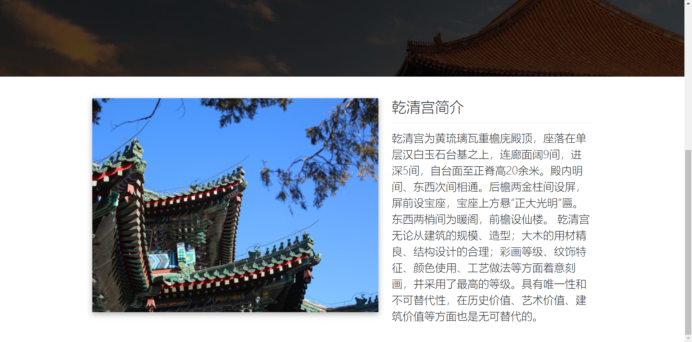

故宫既是中国历代艺术品博物馆，又是一座中国古代建筑博物馆，同时是一个世界遗产遗址，还是一个特殊的原址保护、原状陈列的博物馆。这种多重身份决定了故宫的特殊性，也让故宫具有包罗万象的历史、人文内容。本学期的校选课选择了"走进故宫"这一门课，了解到故宫的一些知识，所以本次选择故宫作为网页主题。
点击图片跳转至各个建筑的简介子页面

网站配色不知道怎么选定色板、调和搭配,不能给人眼前一亮的感觉。最终选定了粉色为网站导航与各个标题的主要配色，但依旧不太满意.
GitHub作为世界上最大的代码托管平台，在国内访问的反应速度较慢。
这门课程初步教授了前端的一些知识，听老师讲解界面很有趣，但是自己从零开始写界面还是有些困难，还是需要借助一些课上的实例来完成网页的设计。总的来说学习前端过程还是很有趣的。